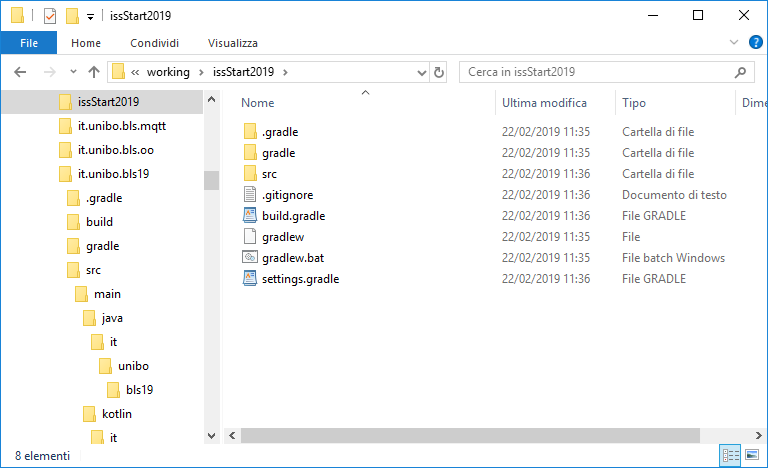

START: GRADLE
- Download gradle (using zip or SDKMAN). Current version: 5.2.1.
- Set GRADLE_HOME to the unpacked Gradle files and add GRADLE_HOME/bin to your PATH environment variable
- Create a work dir (e.g. issStart2019) and work in it
- Execute gradle wrapper
(see https://docs.gradle.org/current/userguide/gradle_wrapper.html)
- Execute gradlew init and select 8 (kotlin-application), 1 (groovy)

- Look at the generated file AppK.kt
- Execute gradlew run. The resullt is:
Task :run
Hello world.
START: A JAVA APP
- Add the folder src/main/java
- Add the class AppJava.java in
src/main/java/issStart2019
- In build.gradle, set mainClassName='issStart2019.AppJava'
- Execute gradlew build
- Look at the directory build, and execute gradlew run. The result is:
Hello world FROM JAVA.
FROM Java TO Kotlin USING IntelliJ IDEA
- Copy AppJava.java in a new class named AppKtFromJava.java
- Open the current working folder (mpuse on it) as IntelliJ IDEA Community Edition Project.
- Select AppJava.java and click on Convert Java file to Kotlin file (CTRL-ALT-SHIFT-K)
and compare the generated AppKtFromJava.kt
with the original AppK.kt
- In build.gradle, set mainClassName='it.unibo.bls19.AppKtFromJava'
- Execute gradlew run
GIT : starting
There are many info sources; for example:
GIT Command Line Basic (video)c
and
Basic Git commands.
- Execute git init in the dir issStart2019.
- Execute git status.
- Edit the file .gitignore
- Execute git log.
- Execute git add -A and git status.
- Execute git reset to undo staging.
- Excute git config --global user.name "Your Name", git config --global user.email "Your Email"
- Execute git config --list.
- Execute git commit -m "First" and git status.
- Execute git log.
- Execute git rm file.txt (--cached file.txt) to delete (remove) files.
- Execute git remote add origin https://github.com/... to connect to a remote GIT.
- Execute git checkout master git merge origin/master --allow-unrelated-histories if needed.
- Execute git push origin master to update the remote GIT
GIT : clone the iss2019Lab
- Open a new, empty directory (e.g. iss2019Lab) and work in it.
- Execute git clone https://github.com/anatali/iss2019Lab.git
- Execute git remote -v
- Use the files as a read-only reference: never change them
- Execute git pull when needed
GIT : useful commands